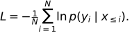

10. 모델 학습 — 정답 확률에서 가중치 갱신까지
언어모델 학습은 정답 토큰에 부여한 확률을 높이도록 가중치를 조정한다. 손실 계산 → 기울기 계산 → 파라미터 갱신은 서로 다른 단계다. 생성과 같은 다음 토큰 문제를 풀지만, 학습 중에는 정답 문맥이 이미 주어져 여러 위치의 예측을 함께 계산할 수 있다.
전체 학습 경로 · 원문 PDF 158~175쪽 · 선행: 출력과 logits
학습 목표는 CE를 손계산하고 학습·검증·시험 데이터를 구분하며, batch와 optimizer step을 세는 것이다. 1~4절은 기본이고 Adam의 수식은 보충 확인용이다.
시각적으로 확인할 핵심
확률에서 손실까지 내려간 뒤, 미분 계산과 가중치 변경을 따로 확인하세요.

확률 합이 아니라 로그 손실의 평균이다. backward와 optimizer update는 별개 단계다.
1. 같은 자료로 공부하고 시험 보면 생기는 문제
train은 가중치를 맞추는 데이터, validation은 설정·중단 시점 등을 선택하는 데이터, test는 선택을 마친 뒤 최종 평가하는 데이터다. 같은 문서의 겹치는 조각을 서로 다른 분할에 넣으면 내용을 사실상 미리 본 누수가 생길 수 있다. 문서·사용자·시간 등 독립 단위를 고려해 나눈다. validation은 과적합을 발견하고 대응할 근거를 주며, 분리 자체가 과적합을 자동 방지하지는 않는다. 시험 데이터를 계속 보고 설정을 고르면 더 이상 독립 시험이 아니다.
2. 손실은 예측 대상에 맞게 고른다
| 대상 | 출력과 정답 | 손실의 의미 |
|---|---|---|
| 실수 회귀 | 예측값·실제값 | MSE: 제곱 오차 평균 |
| 이진 분류 | 양성 logit·0/1 | BCE: 정답 사건의 음의 로그확률 |
| 다중 토큰 분류 | V개 logits·정답 ID | CE: 정답 후보의 음의 로그확률 |
토큰 ID 3과 4가 숫자로 가깝다고 의미가 가까운 것은 아니다. ID 차이의 MSE로 next-token 문제를 풀지 않는다. CE는 자연로그를 사용하고 유효한 정답 위치 수 N으로 평균낸다.

설명용으로 정답 확률이 0.5와 0.25인 두 위치를 생각하자. 첫 손실은 -ln(0.5)=0.693147, 둘째는 -ln(0.25)=1.386294, 평균은 1.039721이다. 확률들을 단순히 더하는 것이 아니다. perplexity는 exp(L)≈2.828427이다. 평균 대상·토큰화·데이터가 다르면 PPL 숫자만으로 모델 우열을 비교하지 않는다. 정답 확률이 0이면 이론적 손실은 무한대이므로 실제 구현에서는 logits에서 log-softmax를 안정적으로 계산한다.
입력 [7,2,9], 정답 [2,9,5]라면 첫 위치는 7을 보고 2를 예측한다. causal mask가 뒤의 정답을 직접 보지 못하게 한다. [B,T,V] logits를 [B*T,V], 정답 [B,T]를 [B*T]로 펴도 위치 대응은 보존해야 한다. API가 내부에서 정답을 shift한다면 밖에서 다시 shift하지 않는다. padding 정답은 평균의 분모에서도 제외한다.
3. 손실이 계산되어도 가중치는 저절로 바뀌지 않는다
배치 → forward → logits → loss → backward → optimizer update
↑ ↓
다음 배치 전에 gradient 초기화
위는 의사 흐름이다. 보통 이전 기울기를 초기화한 뒤 forward/backward/step을 진행한다. backward는 각 가중치가 손실에 미치는 미분을 계산하고 optimizer가 그 값을 이용해 갱신한다. SGD는 w_new=w_old-ηg다. w=2, g=0.3, η=0.1이면 1.97이다. η를 너무 크게 하면 손실이 증가하거나 발산할 수 있다. model.eval()은 Dropout 등 모듈 동작을 바꾸고, no_grad()는 자동미분 기록을 끈다. 검증 시 둘을 구별해 사용한다.
Adam은 기울기 g의 지수이동평균 m과 제곱 기울기의 지수이동평균 v를 유지한다. 보충 수식은 m_t=β1 m_(t-1)+(1-β1)g_t, v_t=β2 v_(t-1)+(1-β2)g_t²이다. 초기 0의 편향을 보정한 mhat=m_t/(1-β1^t), vhat=v_t/(1-β2^t)로 w←w-η mhat/(sqrt(vhat)+ε)를 계산한다. ‘방향’과 ‘보폭’ 비유는 직관이며 최적 손실·일반화를 보장하지 않는다.
원문 해석 주의: 169쪽의 ‘고차원에서는 local minimum이 발생하지 않음’은 일반 명제로 사용하지 않는다. 고차원에도 국소 최소가 존재할 수 있으며 평탄한 영역·안장점·기울기 문제를 구분해야 한다. 173쪽의 작은/큰 배치 효과 역시 학습률·데이터·총 학습량·하드웨어 조건에 의존하므로 단정하지 않는다.
4. Epoch·batch·step과 생성의 차이
데이터 1,000개, batch size 100, 마지막 배치 버림 없음, 배치마다 한 번 갱신이면 한 epoch은 10 optimizer step이다. batch size 128이면 ceil(1000/128)=8배치이며 마지막 104개를 포함한다. drop_last=True면 7배치, 896개만 사용한다. gradient accumulation으로 두 배치마다 갱신하면 배치 수와 optimizer step 수는 달라지므로 마지막 나머지를 갱신할지도 명시해야 한다.
학습에서는 teacher forcing으로 정답 이전 토큰을 각 위치에 공급해 한 번의 causal forward로 여러 next-token 손실을 계산한다. 생성에서는 다음 입력 토큰을 아직 모르므로 선택한 토큰을 붙여 반복한다. 조건부 예측의 방향은 같지만, 학습 문맥은 정답이고 생성 문맥은 자기 예측이므로 두 전체 과정이 완전히 동일하지는 않다. 원문 174쪽의 ‘동일’은 미래를 가리는 조건부 예측 구조로 한정해 읽는다.
5. 이해 확인
- 두 정답 확률을 0.5,0.5로 바꾸면 CE와 PPL은?
- 데이터 10개, batch size 4에서 마지막을 버릴 때와 유지할 때 배치 수는?
- validation loss가 오르는데 train loss만 내려간다면 무엇을 의심하는가?
- backward만 호출한 다음 가중치를 비교하면 왜 그대로일 수 있는가?
해설과 돌아갈 위치
- 평균 CE=0.693147, PPL=2. 둘째 정답의 확률이 높아져 손실이 줄었다. 2절.
- 버리면 2, 유지하면 3. 한 배치당 갱신 가정 아래 step 수도 각각 2·3이다. 4절.
- 과적합, 분할 차이 등을 살핀다. test를 조정용으로 쓰지 않는다. 1절.
- backward는 기울기를 계산할 뿐이다. 실제 optimizer update가 필요하다. 3절.
원문 175쪽 Chapter 5는 실습 안내 페이지다. 이 장의 수치는 새 설명용 예시이며 원 노트북 실행 결과가 아니다. 다음 11장은 사전학습 모델을 특정 작업에 맞추는 방법이다.